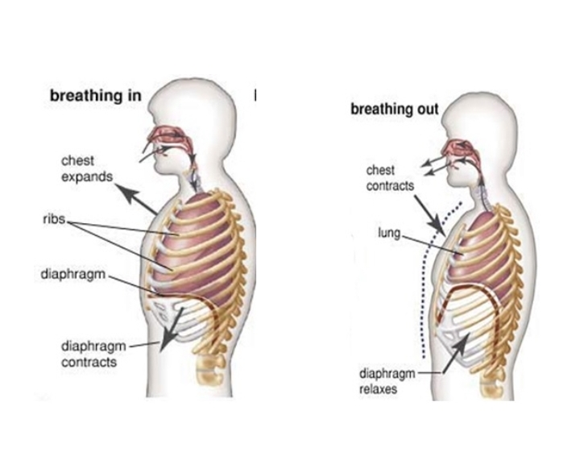
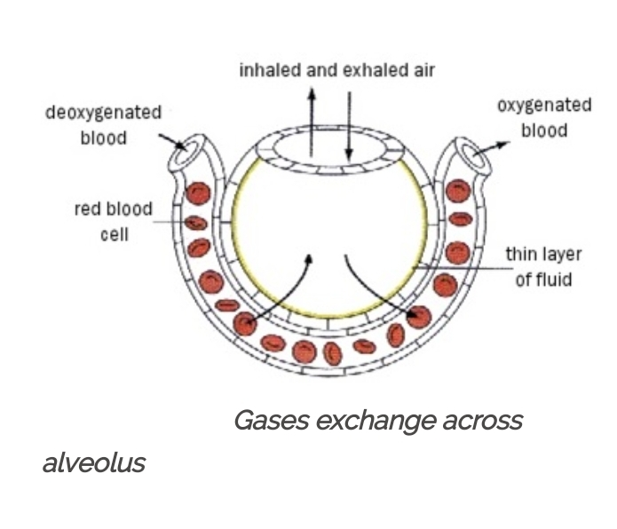

GASEOUS EXCHANGE AND RESPIRATION
MECHANISM OF INHALATION AND EXHALATION
Inhalation
Inhalation__is the act of breathing in or taking in air or other substances into the lungs. It is the process of drawing air or a substance into the respiratory system through the nose or mouth.
When we inhale, the diaphragm and intercostal muscles contract. This causes the chest cavity to expand, creating a negative pressure that allows air to be drawn into the lungs. The diaphragm moves downward and the rib cage expands, increasing the volume of the thoracic cavity. This decrease in pressure causes air to rush into the lungs through the trachea and bronchial tubes.
Exhalation
Exhalation__is the act of breathing out or expelling air from the lungs. It is the opposite of inhalation, which is the act of breathing in air.
During exhalation, the diaphragm and intercostal muscles relax. This causes the chest cavity to decrease in size, creating a positive pressure that forces air out of the lungs. The diaphragm moves upward and the rib cage contracts, decreasing the volume of the thoracic cavity. This increase in pressure pushes air out of the lungs through the trachea and bronchial tubes.
The process of breathing is controlled by the respiratory center in the brainstem, which regulates the rate and depth of breathing based on the body`s needs for oxygen and carbon dioxide exchange. Additionally, sensory receptors in the lungs and blood vessels provide feedback to the respiratory center to help maintain proper breathing patterns.

MECHANISM OF GASEOUS EXCHANGE ACROSS ALVEOLUS
Gaseous exchange across the alveolus occurs through a process called diffusion. This process involves the movement of gases from an area of high concentration to an area of low concentration.
In the lungs, oxygen from the air we breathe diffuses across the thin walls of the alveoli into the bloodstream. This process is facilitated by the high concentration of oxygen in the alveoli and the low concentration of oxygen in the blood.
At the same time, carbon dioxide, a waste product of cellular respiration, diffuses from the bloodstream into the alveoli. This is because the concentration of carbon dioxide is higher in the blood than in the alveoli.
The thin walls of the alveoli, along with the extensive network of capillaries surrounding them, provide a large surface area for efficient gaseous exchange to occur. Additionally, the presence of a moist lining in the alveoli helps to facilitate the diffusion of gases.
Overall, the process of gaseous exchange across the alveolus is essential for the uptake of oxygen by the body`s cells and the removal of carbon dioxide from the bloodstream.

MECHANISM OF BOHR EFFECT
The Bohr effect is a physiological phenomenon that describes the relationship between the partial pressure of carbon dioxide (PCO2) and the pH of blood, and how this affects the binding of oxygen to hemoglobin in red blood cells. This effect was first described by Danish physiologist Christian Bohr in 1904.
When carbon dioxide is produced in tissues as a byproduct of metabolism, it diffuses into the blood and reacts with water to form carbonic acid (H2CO3). This reaction is catalyzed by the enzyme carbonic anhydrase. Carbonic acid then dissociates into bicarbonate ions (HCO3-) and hydrogen ions (H+). The increase in hydrogen ions leads to a decrease in blood pH, making it more acidic.
Conversely, when blood pH is high (alkaline), such as in the lungs where carbon dioxide is exhaled, hemoglobin has a higher affinity for oxygen and binds to it more tightly. This allows for efficient oxygen transport from the lungs to the tissues.
Overall, the Bohr effect helps to ensure that oxygen is delivered to tissues where it is needed most, by regulating the binding and release of oxygen from hemoglobin in response to changes in blood pH caused by carbon dioxide levels.
MECHANISM OF OXYGEN TRANSPORTATION IN VERTEBRATES
In vertebratres oxygen can be transferred into two ways ,dissolved form and in means of blood cells.
1. Dissolved form: In vertebrates, oxygen can be transported in a dissolved form in the blood. This occurs when oxygen molecules diffuse from the alveoli in the lungs into the blood plasma. The oxygen molecules then bind to hemoglobin molecules in red blood cells, which helps to increase the oxygen-carrying capacity of the blood.
2. Red blood cells: The primary mechanism of oxygen transportation in vertebrates is through red blood cells. These specialized cells contain a protein called hemoglobin, which has a high affinity for oxygen. When oxygen molecules bind to hemoglobin, they form oxyhemoglobin, which is then transported throughout the body via the circulatory system.
MECHANISM OF CARBONDIOXIDE TRANSMISSION IN VERTEBRATES
Carbon dioxide is transported
both, in plasma and in red blood cells by
three different ways.
a) It can be transported either as physical
solution (as dissolved carbon dioxide)
or as carbonic acid (H2
CO3
). However
it is only about five percent (5%) of
carbon dioxide that is transported in
solution form and a small amount as
carbonic acid.
b) It can be transported in combination
with proteins: carbon dioxide
combines reversibly with haemoglobin
to form a compound known as
carbaminohaemoglobin. It does not bind
to iron as oxygen does but to amine group
(NH2
) at the end of each polypeptide chain
of haemoglobin and plasma proteins.
About 10 – 20% of carbon dioxide is
transported in this way.
c) It can be transported as hydrogen
bicarbonate ions (HCO3
-
). Most of
the carbon dioxide (about 85%) in
the body is transported as hydrogen
carbonate. Carbon dioxide enters red
blood cells in the tissue’s capillaries
where it combines with water to form
carbonic acid (H2
CO3
). This reaction
is catalysed by the enzyme carbonic
anhydrase which is found in red
blood cells. Then, the carbonic acid
dissociates to form bicarbonate ions
(HCO3
-
) and hydrogen ions (H+
).